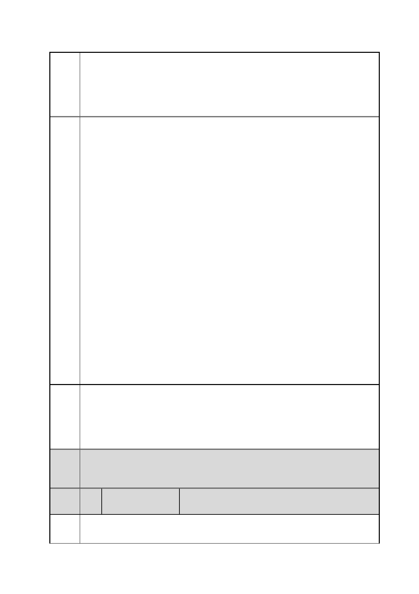

臺北市都市計畫委員會 公民或團體陳情意見綜理表
案
名
市府
回應
委員
會議
決議
編
號
陳情
理由
「變更臺北市信義區逸仙段二小段 33 地號等 21 筆土地（原臺北機廠）
工業區為創意文化專用區、特定專用區、道路及綠地用地主要計畫案」
及「擬定臺北市信義區逸仙段二小段 33 地號等 21 筆土地（原臺北機
廠）創意文化專用區、特定專用區、道路及綠地用地細部計畫暨劃定
都市更新地區計畫案」
得台北機廠古建築群，只剩下「是日據時代建造」的空洞歷史意義，
無法經由整體氛圍的營造，傳達給參觀民眾此處為台灣重要的交通發
展史重工業遺跡的教育意涵。
臺北沒有對於美街館的立即需求，卻對於台灣百年來迅速流失的交通
文化史與工業史相關的歷史文物，有極為迫切的保存呼聲。以台北目
前一地難求的情況下，如要放置大量的相關文物，相信占地廣闊，且
本身即有深遠交通文化史與工業史意義的台北機廠，不用經過太多的
建設與花費，就能完美勝任此任務。國際中以火車工廠轉型為交通觀
光博物館的例子不勝枚舉，像英國約克國家鐵道博物館、日本大宮鐵
道博物館 … 等皆是典型範例，且百年後依舊能發揮文化財的價值，
提供穩定且長久的金錢收益。位於彰化的扇形車庫，過去也曾經有就
地拆除、活化土地的專案而備受討論，決定全區保留後現在是台鐵代
表性的重要觀光財，歷史意義與貢獻度全民有目共睹。現在如草率將
北廠內的歷史建物破壞，一味的將土地大量賣出，不僅是本末倒置之
舉，長遠來看也是國人與國家的一大損失，更是不尊重在地歷史的行
為！
再次祈請臺北市都市計畫委員會審慎評估有關台北機廠的開發方
向，就臺北機廠本身作為「火車修理工廠」的特性，做出最為適性且
富歷史意涵的規畫，並多與在地市民共同討論，一同為北廠決定一條
共存共榮的雙贏結果，且為台灣的下一代，保存台北市過去重要的歷
史痕跡！
本計畫核心文化資產建築群再利用已重新定位為「臺北機廠博物
館」，以鐵道文化資產為規劃主體，將園區古蹟、歷史建築進行空間
活化，以實境保存及其他富創造性的展示活動，來強化鐵道歷史的再
現，並充分利用臺北機廠在城市空間區為上的場域優勢及特質，再利
用為代表城市文化標誌與啟動城市區域再造的多元文化場域。
內容同編號 1。
3 陳情人
中華民國視覺藝術協會（負責人：理事長吳○
祥）
視覺藝術界反對臺北機廠成為美術館與文創園區！
中華民國視覺藝術協會（視盟）聲明。
第 15 頁/共 154 頁